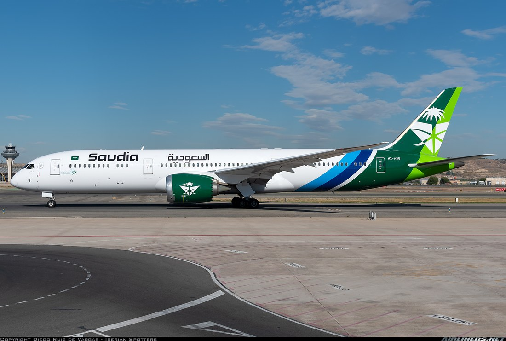

Cabra / Córdoba Central ➔ Madrid Barajas (MAD) ➔ Yeda (JED) ➔ En vuelo a Yakarta

Comienza el gran viaje de Ignacio y Esmeralda. Como el vuelo de Saudia despega de Madrid-Barajas a las 16:40 h, podéis salir por la mañana de este mismo sábado sin necesidad de hacer noche previa en Madrid. Tenéis dos opciones logísticas perfectas desde casa:
Salida de Cabra a las 07:30 h por la A-45 hacia Córdoba e incorporación a la autovía A-4 directa a Madrid (~445 km, 4h 30m + 30 min parada para desayunar). Llegada a las 12:30 h al parking de larga estancia junto a Barajas T1 (Parking Bajo Coste / Aparca&Go / Aena Larga Estancia T1: ~65 € - 75 € por los 16 días completos, es decir, 35 € por persona con traslado en furgoneta de 5 min a la puerta de la T1).
Subida en coche o familiar desde Cabra hasta la Estación de Córdoba Central (50 min). Tren de alta velocidad (AVE / Iryo / Ouigo) Córdoba Central (09:50 h) ➔ Madrid Puerta de Atocha (11:35 h) (1h 45m). En Atocha, con el mismo billete de AVE tenéis Combinado Cercanías gratuito en la línea C-1/C-10 directa a Aeropuerto T4 y autobús lanzadera gratuito de Aena a la T1 (llegada a T1 a las 12:35 h). Coste estimado ida y vuelta: ~70 € por persona.
- 13:10 h — Facturación en Madrid-Barajas Terminal 1 (Mostradores Saudia): Entrega de maletas facturadas (23 kg por persona incluidos) que van etiquetadas hasta el Aeropuerto Internacional Soekarno-Hatta de Yakarta (CGK). Recogéis las dos tarjetas de embarque:
MAD➔JED (SV220)yJED➔CGK (SV818). - 16:40 h — Despegue Vuelo Saudia SV220 (Madrid MAD T1 ➔ Yeda JED T1): Vuelo de 6 horas y 15 minutos con cena caliente incluida a bordo y pantallas individuales.
- 23:55 h (hora local de Arabia Saudí) — Aterrizaje en Yeda (JED Terminal 1): El nuevo aeropuerto Rey Abdulaziz (Terminal 1) es ultramoderno. Seguís los carteles de International Transfers sin pasar inmigración (las maletas siguen solas al siguiente avión). Tiempo de escala: 2 horas exactas (de 23:55 a 01:55 h), el tiempo ideal para pasar el control de seguridad de tránsito y caminar directo a la puerta del vuelo a Yakarta.
- 01:55 h (madrugada del domingo 16) — Despegue Vuelo Saudia SV818 (Yeda JED T1 ➔ Yakarta CGK T3): Tramo nocturno de 9 horas y 05 minutos para dormir del tirón rumbo a Indonesia.